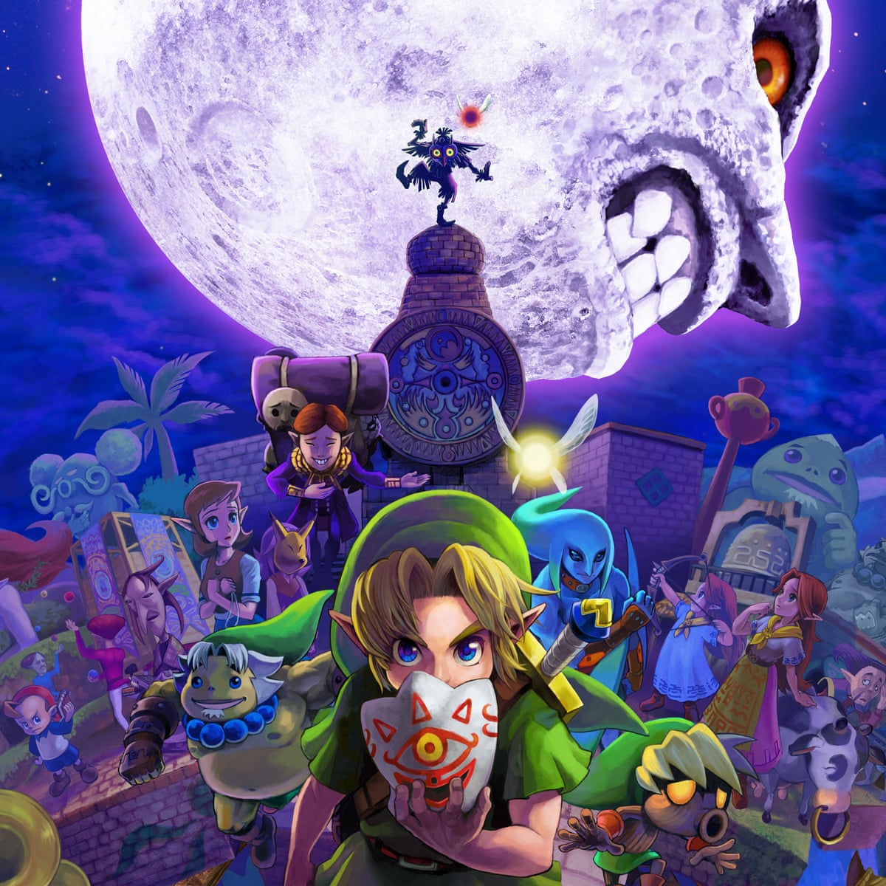

I wasn't sure what to do for this assignment because I knew I would need a lot of information for the page. I thought I should make a page about something I know a lot about, so I decided to make this page about one of my favorite video games, The Legend of Zelda: Majora's Mask. This will be a review of the game and what I thought about it.
The Legend of Zelda: Majora's Mask is a sequel to the game, Ocarina of Time. After, the main character, Link, saves the world at the end of Ocarina of Time, he parts ways with his fairy companion, Navi. At the beginning of Majora's Mask, Link is riding his horse through the woods in search of Navi. When Link falls asleep, a masked imp called Skull Kid approaches him and steals his magic ocarina and his horse. Link chases Skull Kid through the forest until he falls through a hole inside a large tree. Link catches up with Skull Kid, but Skull Kid turns him into a forest creature, called a deku scrub. As Skull Kid escapes, one of the fairies who accompanied him is left behind. Link teams up with the fairy named Tatl to find Skull Kid. They follow the underground path until it leads them to the basement of a clocktower. In this clocktower, they meet a strange mask salesman who says he can turn Link back into a human if he recovers his ocarina. In exchange, Link must also return the Skull Kid's mask to the mask salesman within three days.
Link leaves the clocktower to look for the Skull Kid and recover the stolen mask and ocarina. He explores Clocktown until he finds an observatory telescope that he uses to discover that the Skull Kid is on the roof of the clocktower. Link also learns the clocktower's roof is closed until midnight of the third day. When it's open, Link and Tatl go up the stairs to confront Skull Kid. The fairy with Skull Kid tells Link and Tatl to find the guardians of the swamp, mountains, ocean, and canyon, and then Skull kid uses magic to make the moon fall. Link knocks the ocarina out of Skull Kid's hand and plays the Song of Time before the world could be destroyed. Link and Tatl are taken back in time to the morning of the first day that they arrived in Clocktown. They return to the mask salesman, who teaches Link the Song of Healing. This turns him human again and creates a deku mask that he can use to change back into a deku scrub at will. The mask salesman begs Link to return the mask that Skull Kid stole from him. He explains that it's called the Majora's Mask and it's very powerful and evil.
Link and Tatl leave Clocktown and travel to the swamp. They find out that the deku princess has been kidnapped, and the deku king blames a talking monkey. The monkey tells Link to go to the swamp temple to rescue the princess and prove his innocence. Link explores the swamp temple and defeats an evil swordsman spirit. Link has a vision of the temple's guardian, who tells him to call the guardians when he's ready. Then, Link locates the imprisoned deku princess in the temple and brings her home. The deku princess has the monkey set free and the swamp is returned to normal. Link and Navi travel back in time to the first day to find the guardian of the mountains.
Link and Tatl travel to the mountains. They learn that something in the snow temple is causing the terrible winter, and there are gusts of wind preventing anyone from entering the temple. Link finds an item that lets him see things that are invisible and uses it to find a ghost called Darmani. Darmani is a rock-like creature, called a goron, and he is upset that he died and couldn't save his people. Link plays the Song of Healing for Darmani, and it creates a goron mask for Link to turn into a goron. Link enters the snow temple and uses the goron mask to defeat the bull monster that caused the long winter. Link frees the second guardian and travels back in time to find the guardian of the ocean.
Link and Tatl try to get to the ocean, but it's blocked by a fence. Link explores and ends up finding his horse, which he uses to jump the fence and go to the ocean. On the beach, Link finds a dying fish-person, called a Zora. The Zora's name is Mikau, and he explains that he couldn't recover his wife's Zora eggs that were stolen by pirates. Link plays the Song of Healing for Mikau as he dies to obtain the Zora mask. Link finds and brings the Zora eggs together so they can hatch. After they hatch, the Zora children teach Link a song that he uses to awaken a giant turtle. This turtle takes Link to the water temple, where he defeats a giant fish monster and frees the third guardian. Then, he travels back in time to find the guardian of the canyon.
Link and Tatl travel to the canyon. They learn that this is the land of the undead. Link learns the Song of Storms and uses it to bring water back to the canyon. He navigates his way through an underground maze that leads to the canyon castle. Here, Link fights the undead king, who tells him how to get to the canyon temple. Link enters the temple and fights two giant bug monsters to free the fourth and final guardian. Link and Tatl travel back in time to call the four guardians and fight Skull Kid.
Link and Tatl wait until the end of the third day to climb the stairs to the roof of the clocktower. Skull Kid uses his magic to make the moon fall, but Link calls the guardians to hold up the moon and prevent it from destroying the world. Skull Kid falls unconscious, but the Majora's Mask rises and reveals that it was behind all the trouble Skull Kid caused throughout the land. The mask flies into the moon and posesses it to try to crash to the ground. As the guardians struggle to hold up the moon, Link and Tatl enter a portal that takes them to face the Majora's Mask. Link fights and defeats the evil spirit inside the Majora's mask and saves the world, again. The mask salesman takes back the now powerless Majora's Mask, the fairies forgive Skull Kid, and a new day begins.
The Legend of Zelda: Majora's Mask is one of my favorite video games. I know the story so well because I have replayed the game many times. The original Majora's Mask actually came out for the Nintendo 64, but I will give a review of the remake for the 3DS because I am more familiar with it. First, I like the gameplay. The controls are intuitive, and the 3DS's touchscreen gives more than one way to access your menu and other UI elements. Additionally, I like the three-day game mechanic. The player has to play the Song of Time before the end of the third day, or the moon will crash and destroy the world. Each time you go back, you lose all of your money, ammunition, and small items. You only get to keep your essential items and the money in the bank. Also, the graphics on the 3DS aren't great, but they are significantly better than the N64. The UI also improved from the N64 (The bow is very important and was incredibly difficult to use on the N64).
Second, I liked the items you get in the game. There are three types of items: your gear, items, and masks. The gear basically has items you trade with people to get new things. It's simple RPG item-trading. As far as regular items, you can get a bow with different types of magic arrows, a hookshot used like a grappling hook, bombs, a really strong sword, and all kinds of other cool things that help you on your journey. The items give you multiple ways to solve a problem or defeat an enemy. Finally, there are the masks. I really like the masks and their abilities. You can collect 24 masks total. The shape-altering masks are very cool and essentially give the player three differnt main characters to use, not including Fierce Deity. Some masks are pretty useless, like the mask of scents and garo mask, but some make the game a lot easier, like the stone mask and bunny hood. I like that if you collect all the masks in the world, you unlock the Fierce Deity mask, which makes the final boss battle really easy. It's unfortunate that you can only use it in boss rooms, though.
Third, I like the story. I think the overall tone of Majora's Mask is a little bit darker and stranger than other Zelda games, but I like that it's different. Link's main objective is pretty simple, but other characters' stories that you learn about through the game are very interesting. Everyone has their own unique problems, and Link gets to find ways to solve them or help them heal and get through their problems. Link is able to save the deku princess and everything turns out well for everyone in the swamp, but he can't fix everything for Darmani, Mikau, or the canyon king. I think one of the themes of the game is acceptance because there are side quests that have similar outcomes, where you can't fix everything. Speaking of side quests, the main story of Majora's Mask really only makes up about half of the entire game. The other half consist of side quests that you have to complete on certain days, at certain times. Some of these quests are very interesting and add a lot to the atmosphere of the game, namely the Romani side quest and the Kafei side quest.